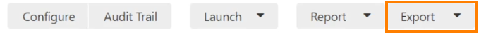

Parse data out of Nessus
Nessus Parser in Perl
1. First we need to export the report with Nessus in a file with extesion .nessus
2. Now Download the nessus parser from here
http://www.melcara.com/archives/253 and the file here
http://www.melcara.com/wp-content/uploads/2017/09/parse_nessus_xml.v24.pl_.zip attacker@kali# perl parse_nessus_xml.v24.pl -f [ exportedReportNessus.nessus]
3. Now we should have an excel with all the data found in Nessus